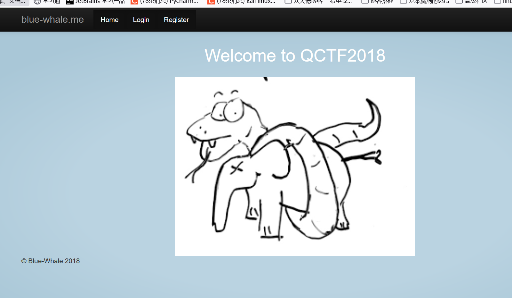

攻防世界-Confusion1
First Post:
Last Update:
Word Count:
Read Time:
Last Update:
Word Count:
368
Read Time:
1 min
题目描述：
某天，Bob说：PHP是最好的语言，但是Alice不赞同。所以Alice编写了这个网站证明。在她还没有写完的时候，我发现其存在问题。(请不要使用扫描器)
题目解题：

进入页面，源代码也没啥信息，看一下其他页面，页面都一样，查看源代码
发现每个页面都有这两条注释信息，访问也没啥用，初步只能证明他用的python的某个框架
然后我尝试在url后面加上49，发现该变量被解析了
但当我进一步搜寻基类时，便出现了

这里是过滤了class，mro，subclasses，base。那就可以字符串拼接，或者利用request
随后回想到之前的源代码，显示
1 | |
那很好想，这个txt就是flag所在文件了，那我们就应该利用read函数，但read也被过滤
payload1：
1 | |
payload2:
1 | |